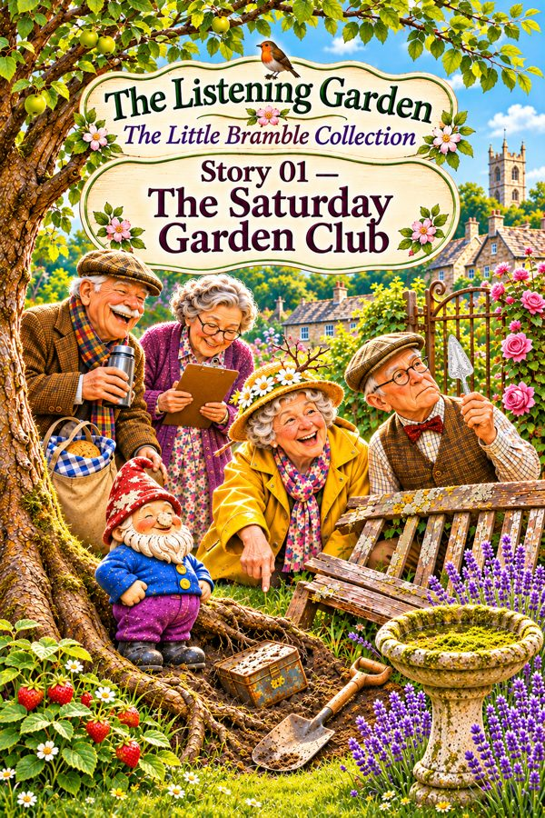
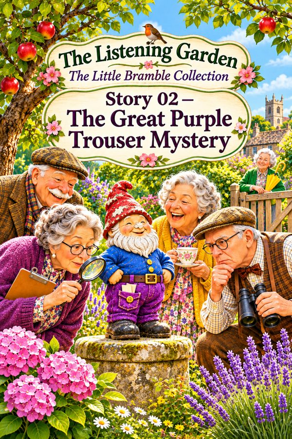
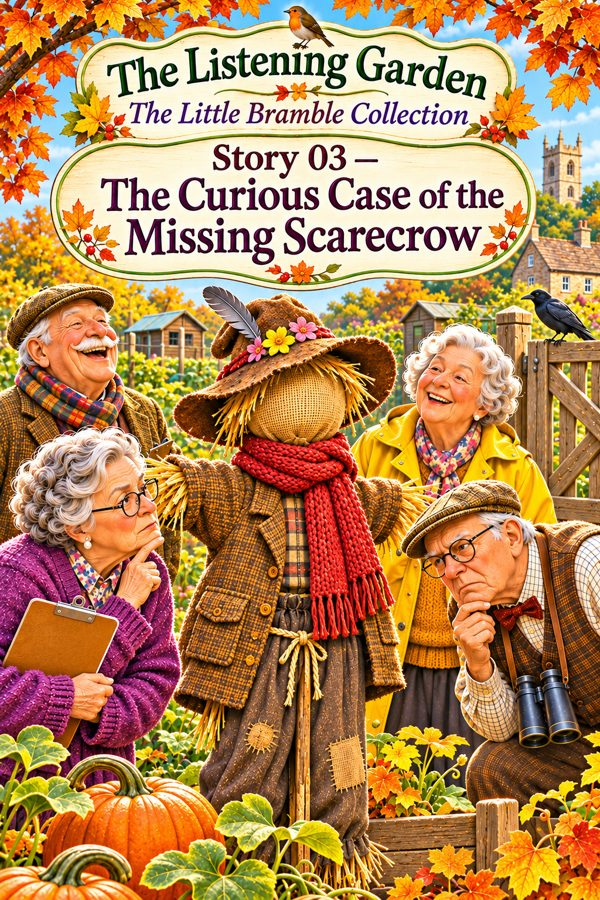
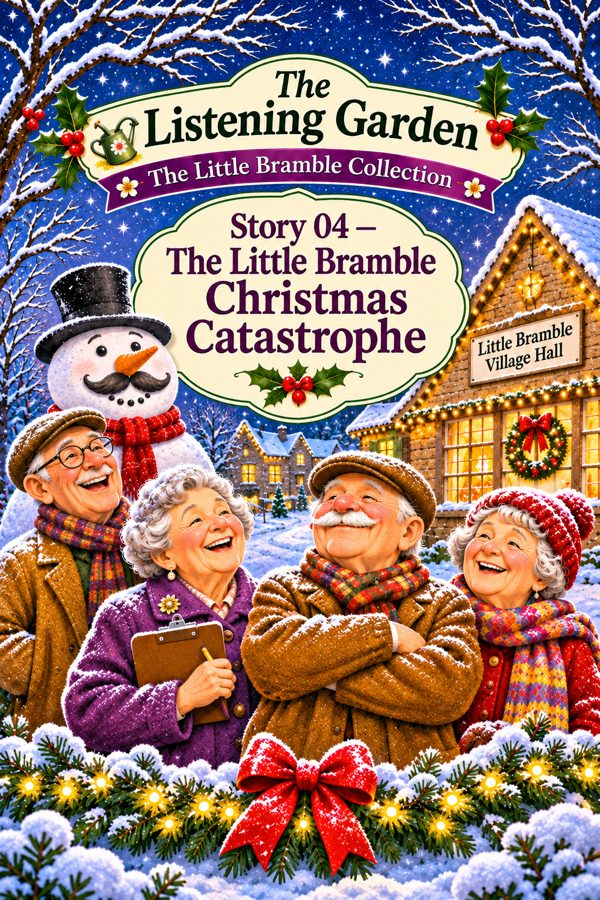
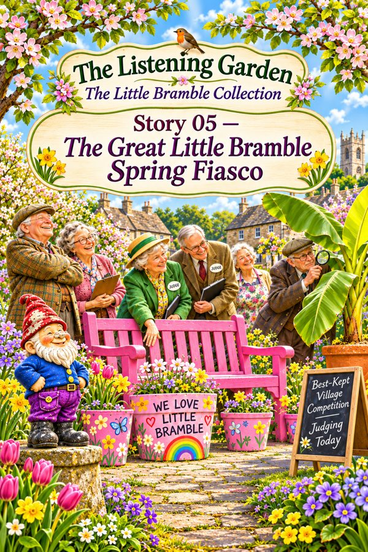
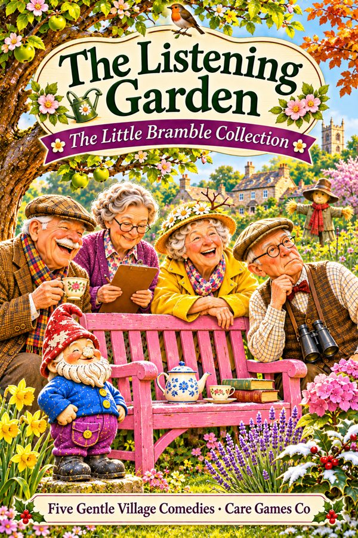

Care Games Co · Audio Stories
Gentle, funny stories from the little English village of Little Bramble. Made for people living with dementia, and for everyone who sits and listens with them.

Arthur, Mabel, Doris and Colin meet at the village garden, and nothing goes quite to plan. Three short chapters, read slowly and clearly, with no sudden loud noises.
Now playing: Chapter One
0:00





All five Little Bramble stories are together in one book: The Listening Garden — The Little Bramble Collection. Large print, cream paper and a comfortable size to hold. It's lovely for reading aloud together.
Buy the book on AmazonPaperback and Kindle editions available on Amazon.